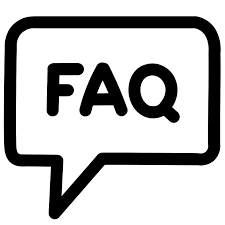

FAQS - Juegos
- ¿Cómo inicio un juego?
- Para comenzar un juego, simplemente haz clic en el botón "Iniciar" en la página de inicio del juego.
- ¿Qué tipos de juegos ofrecen?
- Ofrecemos una variedad de juegos educativos sobre la extinción de animales, diseñados para enseñar sobre la biodiversidad y la conservación.
- ¿Cómo puedo jugar en equipo?
- Por el momento no esta disponible la opción para jugar en equipos.
- ¿Cómo puedo enviar sugerencias?
- Simplemente haz clic en el botón "Sugerencias" en la página de juego.
- ¿Puedo guardar mi progreso en el juego?
- Actualmente, no ofrecemos la función de guardar el progreso del juego. Sin embargo, puedes volver a jugar en cualquier momento para continuar desde donde lo dejaste.
En esta seccion encontrará las preguntas frecuentes, en caso que no consulta no haya sido respondida, por favor contactenos a través del boton de "Conócenos" ubicado en la esquina superior derecha de la página.